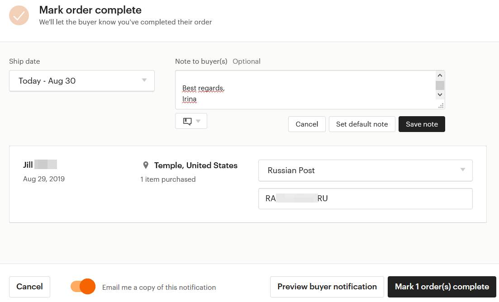
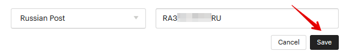
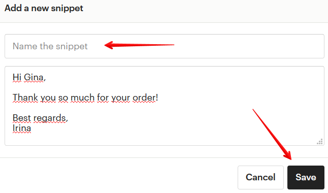
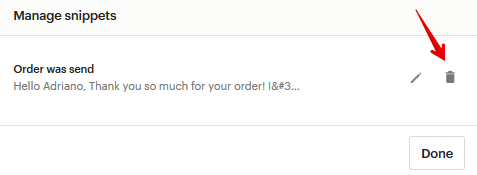
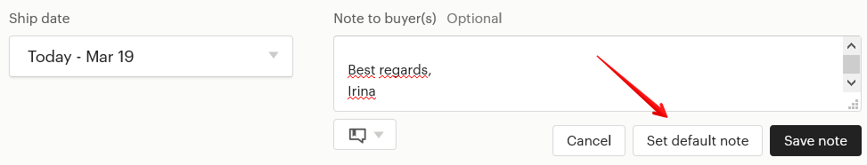
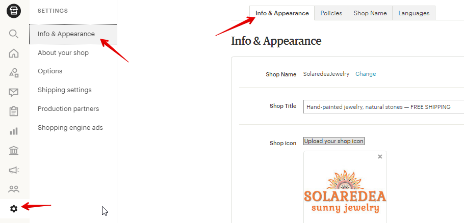
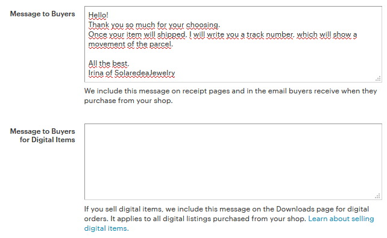
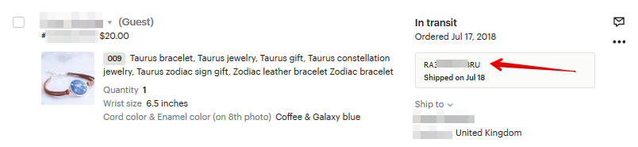

Этап 5 – отмечаем заказ как отправленный
Теперь снова заходим в магазин на Etsy в раздел Orders & Shipping. Находим
нужный заказ, нажимаем кнопку Update progress, а затем Mark complete.
В открывшемся окне нужно указать:
• дату отправки (Ship Date)
• сообщение покупателю (Note to buyer) по желанию. Например, что по-
сылка отправлена с пожеланием скорейшего её получения. Нажмите Save
note
• трек-номер для отслеживания отправления — введите код (цифры и
буквы) с почтовой квитанции. Его можно не указывать.
• по желанию включить переключатель Email me a copy of this notification,
чтобы на вашу электронную почту прислали копию уведомления, которое
получит покупатель


Всё. Осталось нажать кнопку Mark 1 order(s) complete. И ваша работа над отправ-
кой посылки окончена!
Заказ автоматически перейдёт в статус Completed.
Здесь в поле 1 показывается текущий статус отправления. В данном случае, In
transit означает, что посылка в пути. К сожалению, Etsy не всегда верно опре-
деляют этот статус, и порой уже доставленная посылка всё ещё стоит со стату-
сом In transit.
В поле 2 указан трек-номер посылки, а также дата отправки (Shipped on).


Что означает Guest рядом с именем покупателя
Покупать на Etsy могут как зарегистрированные пользователи, так и люди без
аккаунта (Guest). Если вы увидели рядом с именем надпись Guest – значит у
покупателя нет учётной записи на сайте Etsy.
Но это точно такой же заказ, как и все остальные. Для продавцов работа с ним
такая же, как и с заказами зарегистрированных пользователей.
При этом Guest не может оставить отзыв на свой заказ и не может открыть по
нему кейс. Чтобы это сделать, ему придётся создать аккаунт после заказа и при-
вязать к нему совершенную транзакцию.
Как отредактировать трек-номер
Если вы ошиблись в написании трек-номера, то его можно отредактировать в
течение 3 дней после пометки заказа выполненным (Completed).
Для этого раскройте подробную информацию о заказе и нажмите Edit tracking.
Введите верный трек-номер и нажмите кнопку Save.
Как создать шаблон сообщения об отправке
Когда вы нажали кнопку Mark complete, то там можно написать покупателю со-
общение. Например, что его заказ отправлен, и он может отследить его по та-
кому-то трек-номер.
Этот текст можно сохранить как шаблон и затем подставлять в поле Note to
buyer.



Для этого нужно написать текст сообщения, потом нажать кнопку облачка и вы-
брать пункт Save as a new snippet:
В открывшемся окне введите название шаблона (Name the snippet) и нажмите
Save.
Чтобы подставить нужный шаблон в поле Note to buyer(s), нужно нажать на его
название. А чтобы его удалить – перейти к списку сниппетов (Manage snippets),
а затем нажать на значок корзины справа от нужного названия.
Здесь же можно отредактировать текст ранее созданного шаблона. Для этого
нажмите на значок карандаша.
Также вы можете нажать кнопку Set default note, чтобы это сообщение автома-
тически подставлялось для каждого заказа.

Покупатель просит изменить адрес доставки
Многие продавцы переживают, когда покупатель просит выслать товар по дру-
гому адресу, чем он указал в своём заказе. Сразу возникает мысль: нет ли тут
какого-то подвоха?
На самом деле ситуации бывают разными, но чаще всего здесь нет ничего про-
тивозаконного. Сами Этси советуют в своих статьях, что если покупатель пере-
путал адрес, то первым делом ему нужно связаться с продавцом, чтобы узнать,
есть ли возможность оформить доставку по другому адресу.
Я видела в Policies некоторых магазинов, что они не меняют адрес доставки и
отправляют только по тому адресу, что указан в PayPal. Это выбор каждого. Но
я не вижу ничего страшного в том, чтобы пойти на встречу покупателю.
Итак, вы можете отправить посылку по другому адресу, если возникла такая
необходимость. В любом случае, если в дальнейшем и возникнет какая-то про-
блема, у вас будут доказательства в виде переписки, что вы сделали это по
просьбе покупателя.
Я лишь добавлю собственную рекомендацию – сделайте фото конверта/ко-
робки посылки для подстраховки. Его вы тоже можете предоставить потом в
качестве доказательства, если возникнет такая необходимость.
Что написать в автоматическом сообщении покупателю
Вы можете написать сообщение, которое Etsy покажет покупателю сразу после
его оплаты. Можно написать разные сообщения для цифровых товаров и физи-
ческих.
Для редактирования текста перейдите в меню Shop Manager – Settings – Info and
appearance.


Внизу открывшейся страницы вы увидите 2 поля: Message to Buyers и Message to
Buyers for Digital Items.
Текст, размещенный в Message to Buyers будет отправлен покупателям как циф-
ровых, так и физических товаров. Тогда как сообщение в поле Message to Buyers
for Digital Items будет отображаться только на странице скачивания цифрового
файла.
Зачем здесь что-то писать? Главным образом для того, чтобы покупатель не чув-
ствовал себя потерянным после того, как расстался со своими деньгами. Дайте
понять, что вам не всё равно и вас заботит судьба этого человека.
Что здесь можно написать:

• благодарность за совершенную покупку
• в течение какого срока вы отправите заказ
• код скидочного купона на следующую покупку
• ссылки на ваши профили в соцсетях
Покупатель видит это следующим образом:
Как отслеживать посылку/отправление
При отправке вашего заказа вы можете выбрать, высылать его с трек-номером
или без (например, у Почты России это называется, соответственно, заказное
или обычное).
Если вы отправляете товар с трек-номером, то отследить его можно:
• на Etsy
• на сайте почтовой службы
• на сторонних сервисах/сайтах
Вариант 1 – Etsy
Чтобы посмотреть статус вашего отправления на Этси, необходимо зайти в раз-
дел Orders & Shipping и кликнуть на трек-номер нужного вам заказа.


Справа у вас откроется окно с дополнительной информацией о заказе. Прокру-
тите до середины, чтобы посмотреть последние статусы посылки.
Вариант 2 – сайт почтовой службы
Отправления Почты России https://pochta.ru
Отправления Укрпочты - https://track.ukrposhta.ua/tracking_UA.html
Вариант 3 - сторонние сайты
Большинство отправлений можно отследить через сторонние сайты, например:
• https://gdeposylka.ru/
• https://www.17track.net/ru
При этом нужно учесть, что почтовые службы некоторых стран не отслеживают
международные мелкие пакеты (например, Канада, Австралия).
Особенности отправки товаров Почтой России
Международные отправления с вложением товаров бывают двух типов: мелкий
пакет и посылка.
Мелким пакетом считаются отправления до 2 кг и суммой сторон (высота +
длина + ширина) до 90 см. Посылкой можно выслать отправление до 20 кг.
Стоимость
Стоимость отправки мелкого пакета или посылки можно рассчитать прямо на
сайте почты с помощью калькулятора https://www.pochta.ru/parcels
А также задав вопрос онлайн-консультанту.
Стоимость отправления мелких пакетов едина для всех стран мира (т.е. не
важно, отправляете вы в США или Австралию). Всё зависит только от веса от-
правления.
Стоимость посылки, в свою очередь, зависит как от веса, так и от страны назна-
чения.
Страховка
Также вы можете застраховать отправление, чтобы в случае потери вам возме-
стили заявленную вами сумму (но за такую страховку вы платите почте плюсом
к основной стоимости отправки).
Страховать можно только посылки.
Оплата марками
Далеко не все сотрудники почты знают, что вы можете оплатить отправку мел-
ких пакетов марками. Поэтому у меня нередко были случаи, когда я пыталась
доказать в почтовом отделении, что марками отсылать можно - на что мне ка-
тегорично отказывали. Тут можно или покричать и вызвать начальника отделе-
ния, или пойти в другое отделение и найти более осведомленного в правилах
сотрудника.
Оплата марками обойдётся на 60-390 рублей дешевле обычного отправления.
В тарифах Почты России, которые есть у них на сайте, это называется без НДС
(марками) и с НДС (деньгами).
Онлайн оформление посылок
Почта России запустила сервис для зарегистрированных пользователей.
Теперь можно оформлять и оплачивать посылки онлайн, не выходя из дома.
Подробнее об этой возможности читайте у нас на сайте.

Покупатель оставил адрес на арабском/китайском и т.п.
Первый делом необходимо написать покупателю личное сообщение и попро-
сить указать адрес на английском языке. Можно сразу же продублировать со-
общение на электронную почту, которая указана в заказе.
Если в течение 3-4 дней покупатель так и не выйдет на связь – то просто отме-
ните заказ, описав в причине произошедшую ситуацию.
Ещё один вариант – распечатать адрес «как есть» и приклеить на посылку/кон-
верт. Но обязательно подписать страну назначения на своём языке (для сотруд-
ников Почты).
Покупатель оплатил заказ, но не отвечает на уточняющие со-
общения, без которых я не могу отправить заказ
Если вы отправляли личные сообщения на сайте Etsy, то попробуйте написать
на электронную почту. У меня были случаи, когда клиент отвечал именно на
емэйл-сообщения.
Электронную почту клиента можно найти в информации о заказе.
Если же клиент и так не отвечает – подождите несколько дней и отмените заказ.